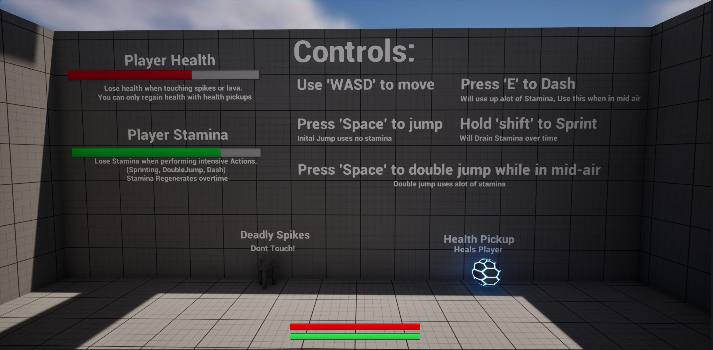
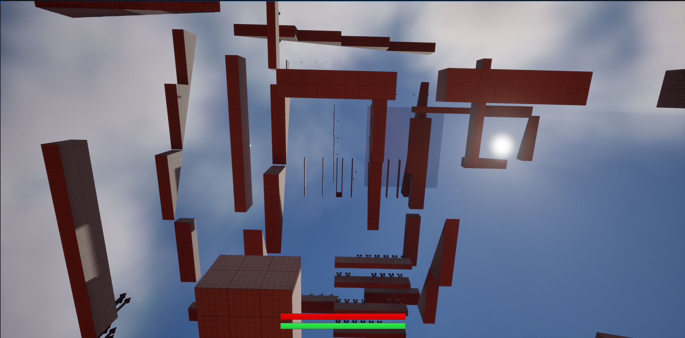

2025 Q1 · Solo Developer
The Floor is Lava
A solo Unreal Engine obstacle-course prototype built to test movement, stamina, checkpoints, damage, and rising lava mechanics.
Project overview
The Floor is Lava was a university submission made as a compact mechanics prototype. The goal was to explore reusable gameplay systems through an obstacle-course structure.
My contribution
- Created the full solo prototype in Unreal Engine.
- Built a health and damage system for hazards and failure states.
- Implemented stamina-driven enhanced movement.
- Added sprinting, double jump, and dash mechanics.
- Built checkpoint and trigger logic.
- Implemented rising lava as an escalating level hazard.
Gallery


